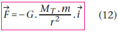
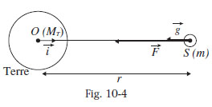
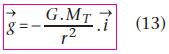
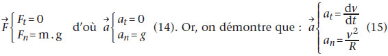

Les mouvements des satellites
Force de gravitation
Dans un repère géocentrique supposé galiléen, un satellite subit une force de gravitation de la part de la Terre :

où G = 6,67.10–11 S.I.

En assimilant la force de gravitation à une force de pesanteur et le champ de gravitation au champ de pesanteur, on a : F = m.g. On en déduit, d’après (12) :

Satellite à trajectoire circulaire
D’après la deuxième loi de Newton, F = m.a, soit m.g = m.a, d’où g = a.
Nous admettrons que le centre de la trajectoire d’un satellite en orbite circulaire est confondu avec le centre de la Terre.
Dans la base de Frénet (u, n) liée au satellite (u, vecteur unitaire tangent en S à la trajectoire et dans le sens du mouvement ; n, vecteur unitaire orthogonal à u et orienté vers l’intérieur de la concavité), les coordonnées des vecteurs F et a sont :

avec at, accélération tangentielle et an, accélération normale. On en déduit que : at = dv / dt = 0. La valeur de la vitesse du satellite est donc constante : un satellite à trajectoire circulaire a un mouvement uniforme.
Plan du site | Contact | Site réalisé par Mathieu Morainville.